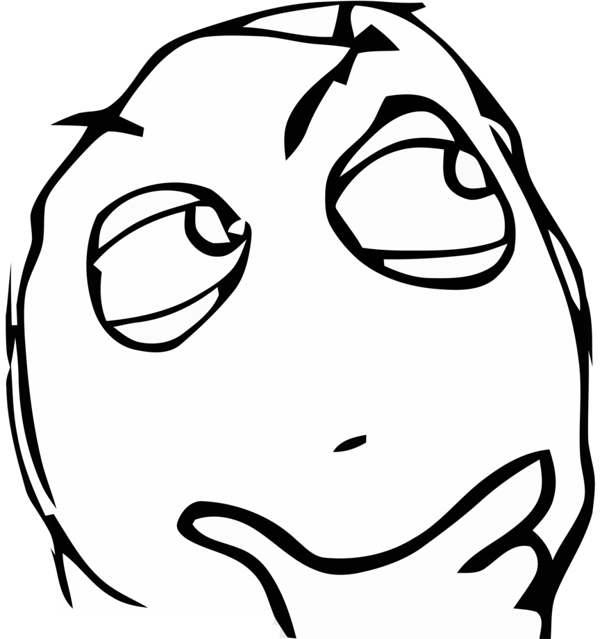

Desbravando o jQuery
Meu nome é Ofelquis
Sou desenvolvedor Front-End na Agência Digital ICOMP escrevo sobre desenvolvimento Web, no TutsMais, Front-End Brasil e no JavaScript Brasil, e também sou um dos organizadores do DevCast Brasil.
Sumario
- Com jQuery nós escrevemos menos
- O básico do básico
- Encadeie seus métodos
- Comece certo, use uma CDN
- Tarefas que o jQuery nos ajuda
Com jQuery nós escrevemos menos
Isso não é difícil
var divs = document.getElementsByTagName('a');
for (var i = 0; i < divs.length; i++) {
divs[i].style.display = 'none';
}
Mas isso é jQuery
$('a').css('display', 'none');
Escreva menos, faça mais.
Com jQuery nós realmente escrevemos menos, e fazemos mais, porém não vamos nos esquecer que existe uma grande lib por trás de um simples
$('a').css('display', 'none');
O que eu quero dizer é, não use jQuery se o que você precisa fazer é algo estupidamente simples
O que eu disse no slide anterior só é valido se você estiver afim de performance, só é valido se você estiver interessado em fazer a pagina carregar com eficiência, etc...
Se o que você precisa mesmo é só fazer as coisas funcionarem...
Foda-se todos
O básico do básico
Se você sabe, selecionar elementos e usar métodos encadeados, durante estes próximos slides você pode ir tomar um cafezinho.
A filosofia do jQuery
Encontre um HTML, faça algo com ele
Encontre um HTML
$('#meuId');
$('.minhaClass');
$('span');
Encontre um HTML
$('#meuId').find('.algumaClass');
$('.minhaClass').find('li').last();
$('span').filter('[data-cadeira]');
Faça algo com o HTML
$('#meuId').remove();
$('.minhaClass').find('li').addClass('item');
$('span').attr('data-cadeira', 12);
Métodos do jQuery que me ajudam a selecionar HTML
Métodos do jQuery que fazem algo com o HTML
Tem método pra garai em amigo
Métodos do jQuery que fazem algo com o HTML
Encadeie os métodos
Se você faz isso
$('#meuId').find('.content').animate({opacity : 1});
$('#meuId').removeClass('desativado');
$('#meuId').addClass('ativo');
Saiba que você pode fazer isso
$('#meuId').find('.content').animate({opacity : 1}).end()
.removeClass('desativado');
.addClass('ativo');
Agora você que foi toma um cafezinho, já pode voltar.
Comece certo, use uma CDN
CDN
Content Delivery Network, em português bem brasileiro quer dizer, carregar a pagina mais rápido.
As CDNs mais conhecidas pra usar o jQuery, é do Google, da Microsoft e o próprio jQuery possui sua CDN
Um pequeno simples motivo pra usar uma CDN
Entre várias palavras que eu poderia colocar aqui, uma CDN faz com que sua pagina abra mais rápido, simples assim. Uma CDN também vai te proporcionar uma ótima economia de banda
E se essa CDN ai tiver errada, ficar fora do ar, etc... meus sites não vão funcionar?
Usando CDN com fallback
<script src="//ajax.googleapis.com/ajax/libs/jquery/1.7.2/jquery.min.js"></script>
<script>window.jQuery || document.write('<script src="js/libs/jquery-1.7.2.min.js"><\/script>')</script>
Testando tipo de dados
Testando tipo de dados
Isso é uma tarefa difícil, o jQuery nos ajuda com os seguintes métodos
- $.inArray
- $.isEmptyObject
- $.isPlainObject
- $.isArray
- $.isNumeric
- $.isFunction
Ajax
Ajax com jQuery é muito facil
$.ajax({
url : 'http://twitter.com/statuses/user_timeline/felquis.json?count=4',
dataType : 'jsonp',
success : function (res) {
$.each(res, function (i, e) {
alert(e.text);
});
}
});
Bom...
Meus slides estão acabando
Tarefa para casa
Perguntas?